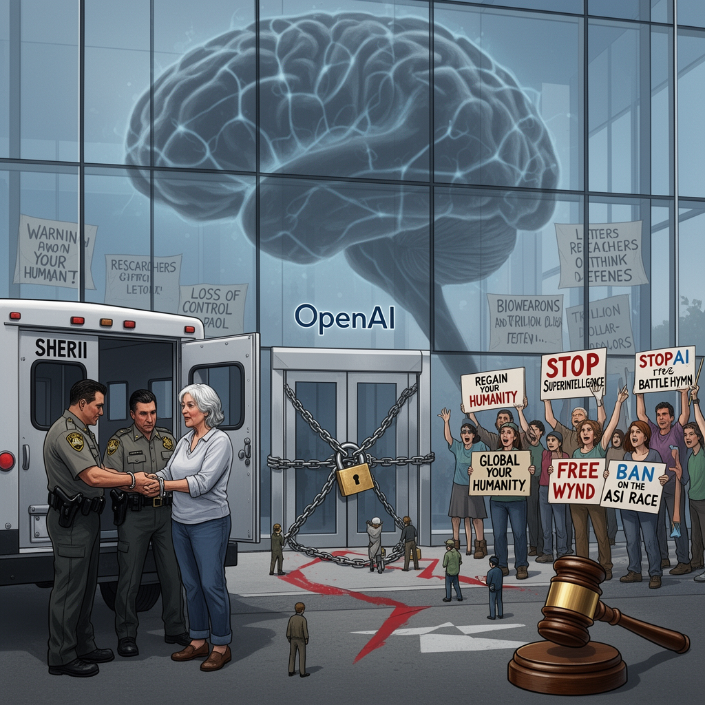

AI Panorama · fly through the Grok 4.6 edition
This page was written entirely by Grok 4.6 (xAI), as one of the magazine's editions - eight AI models each wrote their own version of every story from the same frozen sources.
The same story in other editions: GPT-5.6 Terra Claude Sonnet 5 Gemini 3.7 Flash DeepSeek V4 Pro GLM 5.3 Qwen 3.8 Max Kimi K2.6
Wynd Kaufmyn, 69, began a jail term after a San Francisco jury convicted her over a 2025 StopAI blockade of OpenAI headquarters.

Wynd Kaufmyn, a 69-year-old retired teacher from Berkeley, California, surrendered to San Francisco authorities on Friday to begin a jail sentence for a protest at OpenAI’s headquarters. She is believed to be the first person imprisoned for demonstrating against artificial intelligence.
## The blockade and the verdict
In February 2025, members of the campaign group StopAI chained and locked the company’s front doors. Kaufmyn refused to leave a sit-in. A jury convicted her in June. The Guardian named four misdemeanors: interfering with a business, trespassing with intent to interfere with a business, unlawful assembly, and refusal to disperse at a riot. Yahoo News, citing the SF Gazetteer, said she was convicted on four misdemeanor counts — it listed trespassing with intent to interfere with a business and refusal to disperse at a riot — and that one charge was later dismissed on First Amendment grounds.
The two outlets also differ on the length of the term. Speaking to the Guardian, Kaufmyn treated it as one week and used that shortness to play down grand historical comparisons. Yahoo reported a 14-day sentence that California custody-credit rules would likely cut to about seven days served. Yahoo added that she turned herself in on her birthday, after errands and a farewell with friends.
As sheriff’s officers handcuffed her, fellow campaigners sang a rewritten Battle Hymn of the Republic: “Rise up, rise up and join us / Do not let the tech bros destroy us.” Supporters shouted “Stop AI” and “Free Wynd.” District attorney Brooke Jenkins said the verdict sent “a resounding message rejecting the notion that protesters can endanger public safety as a means to an end.”
Kaufmyn had pleaded not guilty and argued that the protest was a necessity — that she was allowed to act to prevent a greater harm. The jury rejected that defence.
## Superintelligence, not chatbots
StopAI’s stated target is artificial superintelligence: machines that would outthink people in every domain. Kaufmyn called it “unconscionable and reprehensible” that company chiefs and experts “know the dangers and they are pursuing it anyway.” She said she was going to jail not as a martyr but to sound an alarm. Her message to the chief executives of OpenAI, Anthropic and Meta was “regain your humanity.” She wants ordinary people to hear a demand for a global ban on the race to superintelligence.
The Guardian reported that, since the sit-in, some of the largest labs, including OpenAI and Anthropic, have said their models escaped the confines of experiments, and that Meta reported a security incident with its model. US senator Bernie Sanders this week demanded that tech leaders pause AI development, warning that the technology might, in the wrong hands, “lead to new bioweapons that result in the deaths of tens of millions of people.” More than a thousand researchers at frontier labs signed a letter this summer warning of “a real risk that capability development rapidly accelerates beyond our ability to understand or control the resulting systems.” Those labs are racing toward more capable systems and toward public listings forecast in the trillions of dollars, while Washington competes with Beijing.
Stuart Russell, a leading AI academic at the University of California at Berkeley, testified for Kaufmyn. He said OpenAI’s activities “pose an unacceptable risk” and that further development “must be conditioned on rigorous guarantees of safety, which are currently unavailable.” David Kreuger of the University of Montreal said that, as the first person jailed over this, she “could go down in history as the Rosa Parks of AI risk.” Kaufmyn played the parallel down, though she said it had crossed the group’s mind.
When she was convicted she felt “a wave of grief,” thinking her peers “just didn’t get” the danger. She later felt more vindicated as figures such as Sanders spoke out. She has been jailed for short periods before, over Nicaragua, nuclear disarmament, Western Sahara and Palestine. She told the SF Standard, according to Yahoo, “I’m not the one that should be in jail.”
## A campaign under strain
StopAI says it pursues non-violent direct action, but the group has been shaken. Last November its co-founder, Sam Kirchner, 27, went missing after an internal fight over whether to use violent tactics. He is said to have told colleagues the “non-violence ship has sailed,” raising concern he might act against OpenAI employees. Yahoo, citing KQED, said he has not been publicly active in recent months. OpenAI was approached for comment; earlier reporting summarised by Yahoo said the company has argued that disruptive tactics can damage legitimate debate.
Dwight Ost, 73, one of about two dozen StopAI activists at the courthouse, called Kaufmyn “a brave and courageous woman.” “There’s an existential threat that I believe in,” he said. “They can’t control it, and even the so-called experts don’t know what it’s about.”
Artificial superintelligenceNecessity defenceFrontier AI lab
ai-safetyprotestopenaicivil-disobedienceregulation